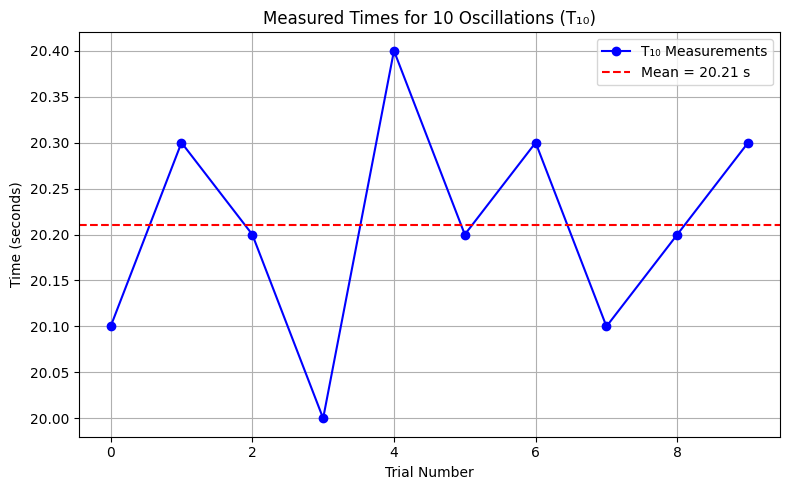

Problem 1: Measuring Earth's Gravitational Acceleration with a Pendulum
Motivation
The acceleration due to gravity (\(g\)) is a fundamental physical constant that affects a wide variety of phenomena. Accurate measurement of \(g\) is essential in understanding gravitational interactions, engineering applications, and experimental physics. One reliable method to determine \(g\) is through the oscillation period of a simple pendulum. The relationship between the pendulum's period and its length allows us to estimate \(g\) while also analyzing the impact of measurement uncertainties.
Task
Measure the local gravitational acceleration \(g\) using a pendulum setup. Carefully analyze uncertainties to understand the precision of your measurements and how experimental limitations influence the final result.
Procedure
1. Materials
- A string (1 or 1.5 meters long).
- A small mass (e.g., a metal washer, keychain, or small bag).
- Stopwatch (or smartphone timer).
- Ruler or measuring tape.
2. Setup
- Securely attach the weight to the end of the string and fix the other end to a stable point.
- Measure the length \(L\) of the pendulum from the suspension point to the center of the mass. Record the ruler resolution \(\Delta L\) as:
\[
\Delta L = \frac{\text{Ruler Resolution}}{2}
\]
3. Data Collection
- Displace the pendulum by a small angle (<15°) and release.
- Measure the time for 10 oscillations (\(T_{10}\)). Repeat this 10 times.
- Compute the average \(\overline{T_{10}}\) and standard deviation \(\sigma_{T}\).
- Determine the uncertainty in the mean time:
\[
\Delta T_{10} = \frac{\sigma_T}{\sqrt{n}} \quad \text{where } n = 10
\]
Calculations
1. Calculate the Period
\[
T = \frac{\overline{T_{10}}}{10} \quad \text{and} \quad \Delta T = \frac{\Delta T_{10}}{10}
\]
2. Determine g
\[
g = \frac{4\pi^2 L}{T^2}
\]
3. Propagate Uncertainties
\[
\Delta g = g \sqrt{ \left(\frac{\Delta L}{L}\right)^2 + \left(\frac{2 \Delta T}{T}\right)^2 }
\]
Python Code for Analysis
import numpy as np
# Sample data (user should replace with actual values)
L = 1.00 # length of pendulum in meters
ruler_resolution = 0.01 # in meters
T10_measurements = [20.1, 20.3, 20.2, 20.0, 20.4, 20.2, 20.3, 20.1, 20.2, 20.3] # in seconds
# Calculations
n = len(T10_measurements)
T10_array = np.array(T10_measurements)
T10_mean = np.mean(T10_array)
sigma_T10 = np.std(T10_array, ddof=1)
Delta_T10 = sigma_T10 / np.sqrt(n)
T = T10_mean / 10
Delta_T = Delta_T10 / 10
Delta_L = ruler_resolution / 2
g = (4 * np.pi**2 * L) / (T**2)
Delta_g = g * np.sqrt((Delta_L / L)**2 + ((2 * Delta_T) / T)**2)
# Output
print(f"Mean T10: {T10_mean:.4f} s")
print(f"Standard deviation (σ_T10): {sigma_T10:.4f} s")
print(f"Period T: {T:.4f} s")
print(f"g = {g:.4f} m/s²")
print(f"Uncertainty in g (Δg): {Delta_g:.4f} m/s²")
import matplotlib.pyplot as plt
# Plot individual T10 measurements
plt.figure(figsize=(8, 5))
plt.plot(T10_measurements, marker='o', linestyle='-', color='blue', label='T₁₀ Measurements')
plt.axhline(T10_mean, color='red', linestyle='--', label=f'Mean = {T10_mean:.2f} s')
plt.title("Measured Times for 10 Oscillations (T₁₀)")
plt.xlabel("Trial Number")
plt.ylabel("Time (seconds)")
plt.grid(True)
plt.legend()
plt.tight_layout()
# Show plot
plt.show()
# Optionally save plot
plt.savefig("pendulum_T10_measurements.png", dpi=300)

Analysis
- Compare your measured \(g\) with the accepted standard value (\(9.81\, m/s^2\)).
- Discuss:
- The effect of measurement resolution on \(\Delta L\).
- Timing variability and its impact on \(\Delta T\).
- Experimental assumptions and sources of error (e.g., air resistance, angle, stopwatch lag).
Deliverables
- A Markdown table including:
- Measured \(L\), \(\Delta L\), 10 values of \(T_{10}\), \(\overline{T_{10}}\), \(\sigma_T\), and \(\Delta T\).
- Calculated values of \(g\) and \(\Delta g\).
- A discussion on:
- Sources of uncertainty.
- Comparison to standard gravity.
- How measurement practices affect result reliability.